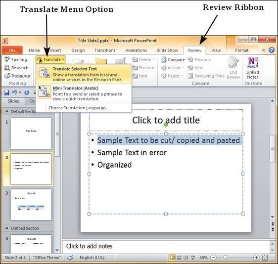
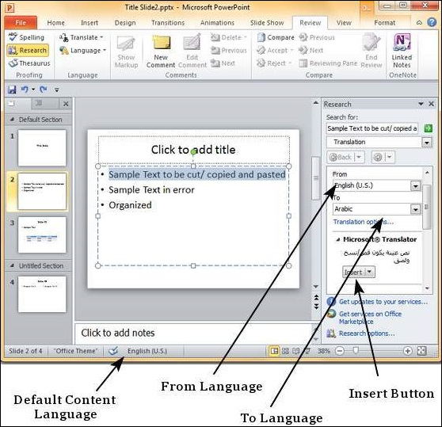
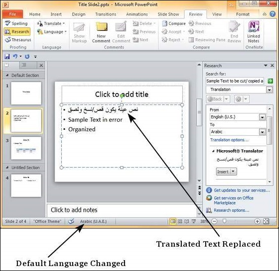

One of the newer features in PowerPoint is the content translation. This feature allows you to select content and have it translated into a different language. The following steps will help you translate content in PowerPoint.
Step 1 − Select the text to be translated and click on Translate - Translate Selected Text under the Language section of the Review ribbon.

Step 2 − In the research sidebar, the "From" language is set to default language settings for the content. The "To" language is set to the alphabetically first language supported by PowerPoint.

Step 3 − From the "To" language dropdown, select the language you want the selected portion of text translated into. Click on Insert to replace the selected text from the default language to the new translated text.
Step 4 − Notice that if you replace the portion of text using translation, the default language for the replaced text also changes automatically.
